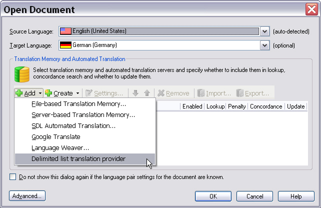
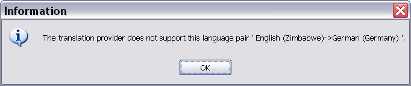

Verifying the Language Pair Support
It is essential for the translation provider plug-in to verify whether the language pair that was selected when opening a document (or when creating a project) is actually supported by the selected translation provider source, i.e. in our implementation the delimited text file. If a user has selected e.g. Japanese -> French when opening a document for translation, but the delimited list contains Italian -> Spanish segment pairs, the text file should be rejected as a translation provider.
Requirements for Checking the Language Direction in our Implementation
Remember that the first line of a delimited text file is required to contain the language pair with the source target languages being separated by the specified delimiting character, e.g.:
en-US;de_DE
Our sample plug-in should first of all check whether the first line can be split at the specified delimiter character and whether the languages indicated here match the language pair that the user selected in Trados Studio.
In the following screenshot English (US) is selected as the source language, the target language is German (Germany). The API would therefore return en-US for the source language SourceCultureName, and de-DE for the target language, i.e. the TargetCultureName property. These strings map, of course, nicely to the locale combination of our list files, which makes checking whether the selected language pair actually fits the selected list very easy.

(In other implementations, the translation provider that you connect to might not allow for such an easy mapping of languages, which means that you may have to develop a more involved application logic for verifying the validity of the language combination.)
The requirement is to check whether the selected language pair actually fits the translation provider, or whether the language pair is supported by the translation provider in the first place. For example, if you connect to an automated translation service that does not support Japanese, but the user has selected Japanese as source or target language, then a corresponding message needs to be thrown, and the user should not be allowed to select this particular translation provider.
Implement the Logic for Checking the Language Direction
The logic for checking the language direction is implemented within the SupportsLanguageDirection method of the ITranslationProvider interface. This method takes a region-qualified source-target language combination object as parameter. This object holds the information on the languages that were selected by the user in the user interface of Trados Studio, and which needs to be compared to the language direction of the translation provider.
We start by opening the text file and reading the first line:
using (StreamReader listFile = new StreamReader(Options.ListFileName))
{
firstLine = listFile.ReadLine();
listFile.Close();
}
Then we verify whether this first line actually contains the language direction information by matching the string to a regular expression. If the regular expression is not matched, then we return False, which means that the list file cannot be used as a translation provider.
string[] langs = (firstLine.Split(Convert.ToChar(Options.Delimiter)));
if (langs.Count<string>() != 2)
{
return false;
}
If the first line matches the regular expression, we can proceed to comparing the language combination that is indicated in the list file to the source/target languages that have been chosen in Trados Studio. Depending on whether the language combination is matching or not, we return True or False.
if (langs[0].ToLower() == languageDirection.SourceCultureName.ToLower()
&& langs[1].ToLower() == languageDirection.TargetCultureName.ToLower())
{
// The provider supports the selected language direction.
return true;
}
else
{
// The provider does not support the selected language direction.
return false;
}
When the method returns False, Trados Studio will throw a message like the one in the example below when selecting the translation provider:

Putting it All Together
The complete method should now look as shown below:
public bool SupportsLanguageDirection(LanguagePair languageDirection)
{
string firstLine = "";
#region "ReadFirstLine"
using (StreamReader listFile = new StreamReader(Options.ListFileName))
{
firstLine = listFile.ReadLine();
listFile.Close();
}
#endregion
// Check whether the first line of the text file indicates
// the language direction, e.g. en-US;de-DE.
// If the first line cannot be split at the delimiter, the delimited list
// file should not be accepted as translation provider.
#region "FirstLineCheck"
string[] langs = (firstLine.Split(Convert.ToChar(Options.Delimiter)));
if (langs.Count<string>() != 2)
{
return false;
}
#endregion
// This implementation will not be case-sensitive, therefore
// we use the ToLower() method when comparing the language direction
// of the delimited file to the language direction that was
// selected in Trados Studio.
#region "CompareLanguages"
if (langs[0].ToLower() == languageDirection.SourceCultureName.ToLower()
&& langs[1].ToLower() == languageDirection.TargetCultureName.ToLower())
{
// The provider supports the selected language direction.
return true;
}
else
{
// The provider does not support the selected language direction.
return false;
}
#endregion
}